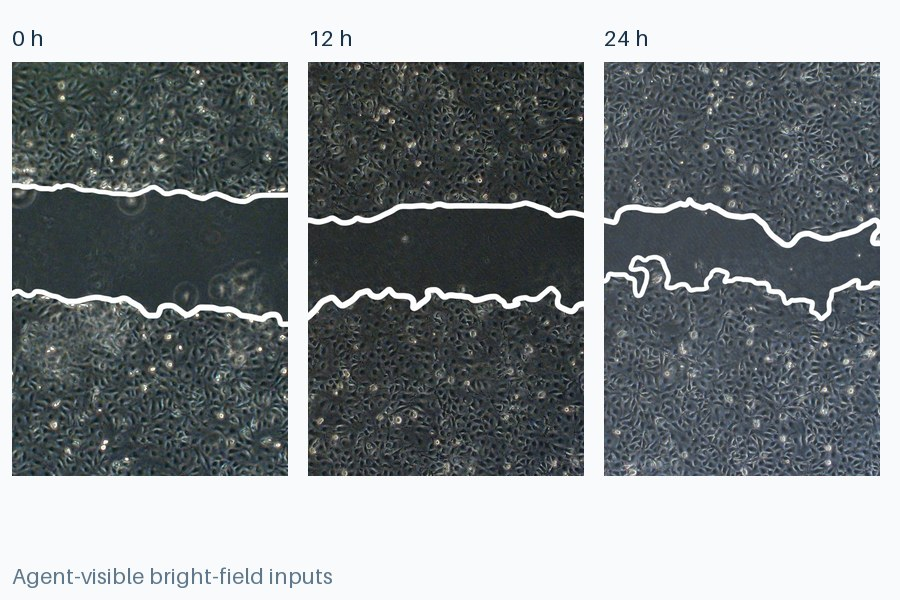
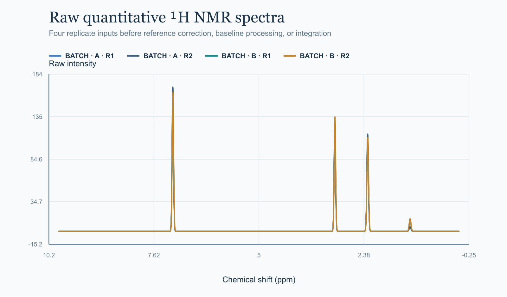
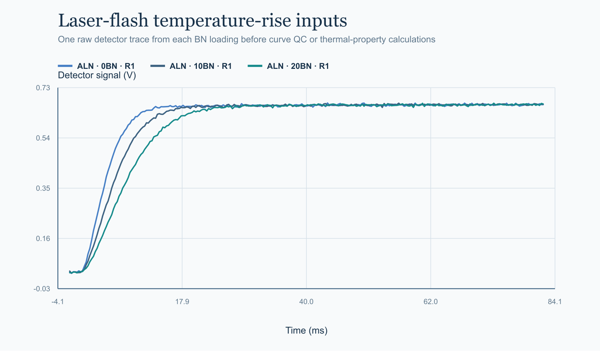

FrontierChallenge
A benchmark for whether agent systems can complete specified scientific workflows and deliver a checkable artifact bundle.
| Rank | Model | Agent Scaffold |
|---|
13 model–scaffold configurations · 97 tasks · Pass Rate = native Score ≥ 99.9.
Selected cases
See the workflow, not just the score.
 01
01

02 03
03
…GACCTGACTGJ1CTGAGCCTGA…
Primer3junction spanning33 off-targetspaired specificity
target.fasta→primers.csv→qc_summary.json
04
Gaselectrostaticvan der Waals
Waterelectrostaticvan der Waals
9 λ windows × 4 pathsAMBER-native evidence
05
Calibrate→Blank correct→Integrate heat→Screen safety
ΔTadMTSRaccumulationheat recovery
raw time series→protocol decision
06

07
08 09
09
 10
10